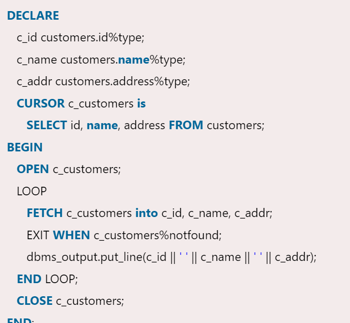
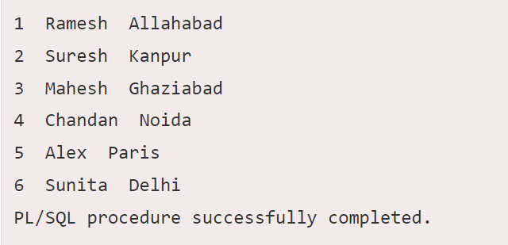

When an SQL statement is processed, Oracle creates a memory area known as context area. A cursor is a pointer to this context area. It contains all information needed for processing the statement. In PL/SQL, the context area is controlled by Cursor. A cursor contains information on a select statement and the rows of data accessed by it.
A cursor is used to referred to a program to fetch and process the rows returned by the SQL statement, one at a time. There are two types of cursors:
Implicit Cursors
Explicit Cursors
The implicit cursors are automatically generated by Oracle while an SQL statement is executed, if you don't use an explicit cursor for the statement. These are created by default to process the statements when DML statements like INSERT, UPDATE, DELETE etc. are executed. Orcale provides some attributes known as Implicit cursor's attributes to check the status of DML operations. Some of them are: %FOUND, %NOTFOUND, %ROWCOUNT and %ISOPEN.
The Explicit cursors are defined by the programmers to gain more control over the context area. These cursors should be defined in the declaration section of the PL/SQL block. It is created on a SELECT statement which returns more than one row. Following is the syntax to create an explicit cursor:
CURSOR cursor_name IS select_statement;
 >